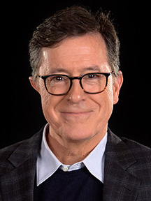

Early Life
Stephen Colbert was born on May 13, 1964, in Washington, D.C. The youngest of eleven children, he was born to James William Colbert Jr., an immunologist, and Lorna Elizabeth Colbert, a homemaker. Spending his early years in Bethesda, Maryland, the family later moved to James Island, South Carolina, a suburb of Charleston.
Colbert graduated from Porter-Gaud High School. He originally attended Hampden-Sydney College in Virginia as a philosophy major. After 2 years, he transferred to Northwestern University. He graduated in 1986 with a Bachelor's of Arts in Communication.
Professional Career
Stephen Colbert got his start in comedy performing improv at Northwestern. His first job out of college was at the ticket booth at The Second City. He took free classes, and was soon on the touring company, serving as an understudy for Steve Carell. He worked on The Dana Carvey Show and Strangers with Candy with other Second City cast members before reaching The Daily Show in 1997.
Colbert was hired as a "correspondent" for the second season of The Daily Show. He played his character as a parody of conservative commentators like Bill O'Reilly for several years. His character was so successful, that Colbert hosted a spin off of The Daily Show, called The Colbert Report, from 2005-2014. Colbert used the same character and interview several prominent celebrities and political figures.
In 2014, it was announced that Colbert would step down from his hosting duties at The Colbert Report to replace outgoing Late Show on CBS host David Letterman. The first edition hosted by Colbert premiered on September 8, 2015 with George Clooney as the guest. The show has taken on a much more political focus than that of Letterman's. Colbert also created, wrote, and executive produced two satirical political cartoon shows, Our Cartoon President and Tooning Out the News.
Selected Works
Colbert's works span multiple decades. Mostly active in comedy and sketch comedy programs, Colbert also has several voice acting credits. He also writes and produces his own material, in addition to presenting.
- The Daily Show; presenter, writer (1997-2005)
- The Colbert Report; presenter, co-creator, writer, executive producer (2005-2014)
- The Late Show; presenter, writer, executive producer (2015-Present)
- Our Cartoon President; co-creator, writer, executive producer (2018-2020)
- Tooning Out the News; co-creator, writer, executive producer (2020-2023)
Colbert has been nominated for 46 Emmy Awards, winning 10. The comedian has also won 2 Grammy Awards for Best Comedy Album in 2010 and Best Spoken Word Album in 2014.
